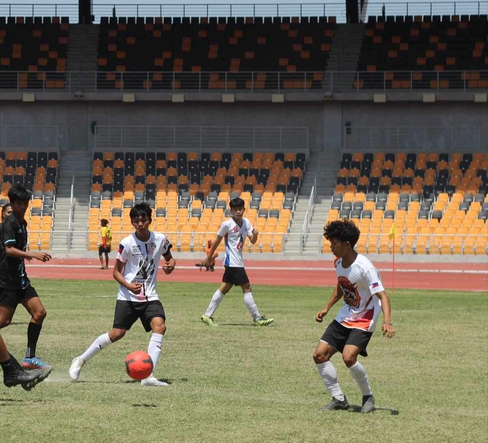
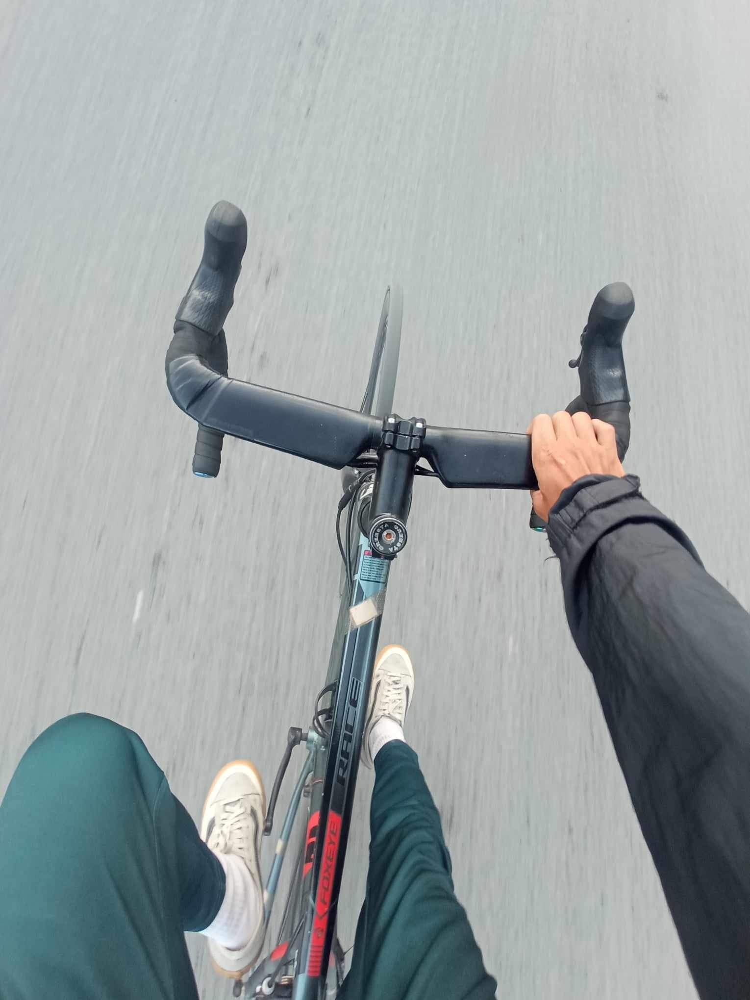

Luigie D. Macasaquit
I'm 21 years old
i was born in October 24, 2002
My pronounce is he/him/his
Hello! I'm an enthusiastic student pursuing a Bachelor of Science in Information Technology, a field that captivates me with its endless possibilities and its power to transform the world. My academic life is a tapestry woven with threads of complex algorithms, innovative software solutions, and the robust architecture of networks that keep our digital world pulsing.
Parallel to my academic pursuits, I am an athlete with a fervent passion for football. The green field is my canvas, and the ball is my brush with which I paint moments of agility, strategy, and teamwork. Football is not just a game for me; it's a metaphor for life, where every goal scored is a triumph over challenges, and every miss is a lesson learned.
When I'm not decoding problems or scoring goals, you'll find me cycling. It's more than a hobby; it's a journey on two wheels that takes me through the highs and lows of terrains, much like the ebbs and flows of life. As I pedal, I'm often accompanied by music, the universal language that speaks directly to the soul. It's a symphony that harmonizes with the rhythm of my ride, creating a perfect balance between motion and emotion.